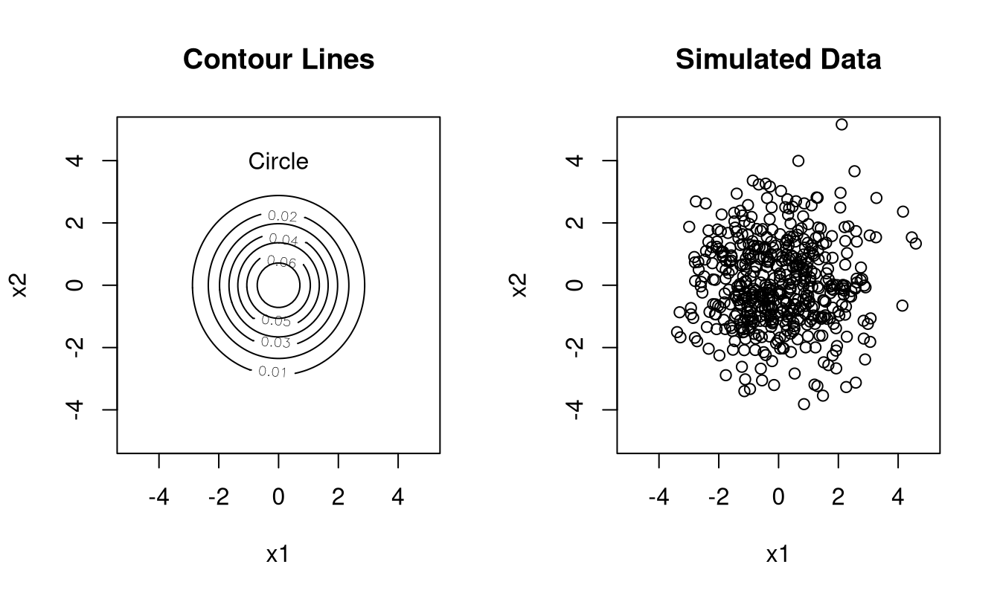
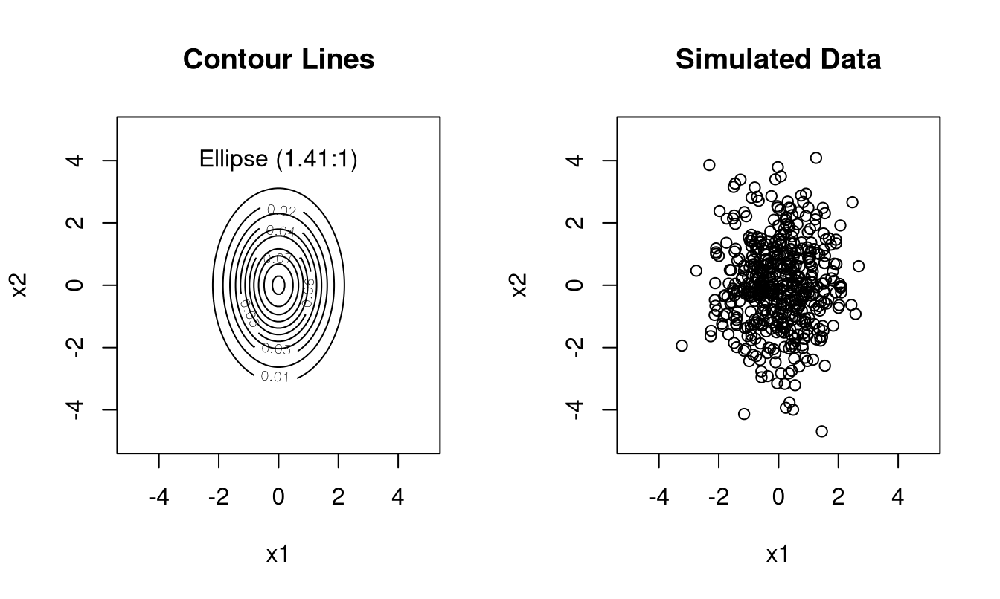

1 Multivariate random variables
1.1 Essentials in multivariate statistics
Why multivariate statistics?
In science we use experiments to learn about underlying mechanisms of interest, both deterministic and stochastic, to compare different models and to verify or reject hypotheses about the world. Statistics provides tools to quantify this procedure and offers methods to link data (experiments) with probabilistic models (hypotheses).
In univariate statistics with we use relatively simple approaches based on a single random variable or single parameter. However, in practise we often have to consider multiple random variables and multiple parameters, so we need more complex models and also be able to deal with more complex data. Hence, the need for multivariate statistical approaches and models.
Specifically, multivariate statistics is concerned with methods and models for random vectors and random matrices, rather than just random univariate (scalar) variables. Therefore, in multivariate statistics we will frequently make use of matrix notation.
Closely related to multivariate statistics (traditionally a subfield of statistics) is machine learning (ML) which is traditionally a subfield of computer science. ML used to focus more on algorithms rather on probabilistic modelling but nowadays most machine learning methods are fully based on statistical multivariate approaches, so the two fields are converging.
Multivariate models provide a means to learn dependencies and interactions among the components of the random variables which in turn allow us to draw conclusion about underlying mechanisms of interest (e.g. in biological or medical problems).
Two main tasks:
- unsupervised learning (finding structure, clustering)
- supervised learning (training from labelled data, followed by prediction)
Challenges:
- complexity of model needs to be appropriate for problem and available data
- high dimensions make estimation and inference difficult
- computational issues
Univariate vs. multivariate random variables
Univariate random variable (dimension \(d=1\)): \[x \sim F\] where \(x\) is a scalar and \(F\) is the distribution. \(\text{E}(x) = \mu\) denotes the mean and \(\text{Var}(x) = \sigma^2\) the variance of \(x\).
Multivariate random vector of dimension \(d\): \[\boldsymbol x= (x_1, x_2,...,x_d)^T \sim F\]
\(\boldsymbol x\) is vector valued random variable.
The vector \(\boldsymbol x\) is column vector (=matrix of size \(d \times 1\)). Its components \(x_1, x_2,...,x_d\) are univariate random variables. The dimension \(d\) is also often denoted by \(p\) or \(q\).
Note that for simplicity of notation we use the same symbol to denote the random variable and its elementary outcomes (in particular we don’t use capitalisation to indicate a random variable). This convention greatly facilitates working with random vectors and matrices and follows, e.g., the classic multivariate statistics textbook by Mardia, Kent, and Bibby (1979). If a quantity is random we will always specify this explicitly in the context.
Multivariate data
Vector notation:
Samples from a multivariate distribution are vectors (not scalars as for univariate normal): \[\boldsymbol x_1,\boldsymbol x_2,...,\boldsymbol x_n \stackrel{\text{iid}}\sim F\]
Matrix and component notation:
All the data points are commonly collected into a matrix \(\boldsymbol X\).
In statistics the convention is to store each data vector in the rows of the data matrix \(\boldsymbol X\):
\[\boldsymbol X= (\boldsymbol x_1,\boldsymbol x_2,...,\boldsymbol x_n)^T = \begin{pmatrix} x_{11} & x_{12} & \dots & x_{1d} \\ x_{21} & x_{22} & \dots & x_{2d} \\ \vdots \\ x_{n1} & x_{n2} & \dots & x_{nd} \end{pmatrix}\]
Therefore, \[\boldsymbol x_1=\begin{pmatrix} x_{11} \\ \vdots \\ x_{1d} \end{pmatrix} , \space \boldsymbol x_2=\begin{pmatrix} x_{21} \\ \vdots \\ x_{2d} \end{pmatrix} , \ldots , \boldsymbol x_n=\begin{pmatrix} x_{n1} \\ \vdots \\ x_{nd} \end{pmatrix}\]
Thus, in statistics the first index runs over \((1,...,n)\) and denotes the samples while the second index runs over \((1,...,d)\) and refers to the variables.
The statistics convention on data matrices is not universal! In fact, in most of the machine learning literature in engineering and computer science the data samples are stored in the columns so that the variables appear in the rows (thus in the engineering convention the data matrix is transposed compared to the statistics convention).
In order to avoid confusion and ambiguity it is recommended to prefer vector notation to describe data over matrix or component notation (see also the section below on estimating covariance matrices for examples).
Mean of a random vector
The mean / expectation of a random vector with dimensions \(d\) is also a vector with dimensions \(d\): \[\text{E}(\boldsymbol x) = \boldsymbol \mu= \begin{pmatrix} \text{E}(x_1) \\ \text{E}(x_2) \\ \vdots \\ \text{E}(x_d) \end{pmatrix} = \left( \begin{array}{l} \mu_1 \\ \mu_2 \\ \vdots \\ \mu_d \end{array}\right)\]
Variance of a random vector
Recall the definition of mean and variance for a univariate random variable:
\[\text{E}(x) = \mu\]
\[\text{Var}(x) = \sigma^2 = \text{E}( (x-\mu)^2 )=\text{E}( (x-\mu)(x-\mu) ) = \text{E}(x^2)-\mu^2\]
Definition of variance of a random vector:
\[\text{Var}(\boldsymbol x) = \underbrace{\boldsymbol \Sigma}_{d\times d} = \text{E}\left(\underbrace{(\boldsymbol x-\boldsymbol \mu)}_{d\times 1} \underbrace{(\boldsymbol x-\boldsymbol \mu)^T}_{1\times d} \right) = \text{E}(\boldsymbol x\boldsymbol x^T)-\boldsymbol \mu\boldsymbol \mu^T\]
The variance of a random vector is, therefore, not a vector but a matrix!
\[\boldsymbol \Sigma= (\sigma_{ij}) = \underbrace{\begin{pmatrix} \sigma_{11} & \dots & \sigma_{1d}\\ \vdots & \ddots & \vdots \\ \sigma_{d1} & \dots & \sigma_{dd} \end{pmatrix}}_{d\times d}\]
Properties of the covariance matrix
- \(\boldsymbol \Sigma\) is real valued: \(\sigma_{ij} \in \mathbb{R}\)
- \(\boldsymbol \Sigma\) is symmetric: \(\sigma_{ij} = \sigma_{ji}\)
- The diagonal of \(\boldsymbol \Sigma\) contains \(\sigma_{ii} = \text{Var}(x_i) = \sigma_i^2\), i.e. the variances of the components of \(\boldsymbol x\).
- Off-diagonal elements \(\sigma_{ij} = \text{Cov}(x_i,x_j)\) represent linear dependencies among the \(x_i\). \(\Longrightarrow\) linear regression, correlation
| \(d\) | # entries |
|---|---|
| 1 | 1 |
| 10 | 55 |
| 100 | 5050 |
| 1000 | 500500 |
| 10000 | 50005000 |
How many distinct elements does \(\boldsymbol \Sigma\) have? \[ \frac{d(d+1)}{2} \] This grows with the square of the dimension \(d\), i.e. it grows with order \(O(d^2)\) (Table 1.1).
For large dimension \(d\) the covariance matrix has many components!
–> computationally expensive (both for storage and in handling) –> very challenging to estimate \(\boldsymbol \Sigma\) in high dimensions \(d\).
Note: matrix inversion requires \(O(d^3)\) operations using standard algorithms such as Gauss Jordan elimination. 1 Hence, computing \(\boldsymbol \Sigma^{-1}\) is computationally expensive for large \(d\)!
Eigenvalue decomposition of \(\boldsymbol \Sigma\)
Recall from linear matrix algebra that any real symmetric matrix has real eigenvalues and a complete set of orthogonal eigenvectors. These can be obtained by orthogonal eigendecomposition. 2
Applying eigenvalue decomposition to the covariance matrix yields \[ \boldsymbol \Sigma= \boldsymbol U\boldsymbol \Lambda\boldsymbol U^T \] where \(\boldsymbol U\) is an orthogonal matrix 3 containing the eigenvectors of the covariance matrix and \[\boldsymbol \Lambda= \begin{pmatrix} \lambda_{1} & \dots & 0\\ \vdots & \ddots & \vdots \\ 0 & \dots & \lambda_{d} \end{pmatrix}\] contains the corresponding eigenvalues \(\lambda_i\).
Importantly, the eigenvalues of a covariance matrix are not only real-valued but are by construction further constrained to be non-negative. This can be seen by computing the quadratic form \(\boldsymbol z^T \boldsymbol \Sigma\boldsymbol z\) where \(\boldsymbol z\) is a non-random vector. For any non-zero \(\boldsymbol z\) \[ \begin{split} \boldsymbol z^T \boldsymbol \Sigma\boldsymbol z& = \boldsymbol z^T \text{E}\left( (\boldsymbol x-\boldsymbol \mu) (\boldsymbol x-\boldsymbol \mu)^T \right) \boldsymbol z\\ & = \text{E}\left( \boldsymbol z^T (\boldsymbol x-\boldsymbol \mu) (\boldsymbol x-\boldsymbol \mu)^T \boldsymbol z\right) \\ & = \text{E}\left( \left( \boldsymbol z^T (\boldsymbol x-\boldsymbol \mu) \right)^2 \right) \geq 0 \, .\\ \end{split} \] Furthermore, with \(\boldsymbol y= \boldsymbol U^T \boldsymbol z\) we get \[ \begin{split} \boldsymbol z^T \boldsymbol \Sigma\boldsymbol z& = \boldsymbol z^T\boldsymbol U\boldsymbol \Lambda\boldsymbol U^T \boldsymbol z\\ & = \boldsymbol y^T \boldsymbol \Lambda\boldsymbol y= \sum_{i=1}^d y_i^2 \lambda_i \\ \end{split} \] and hence all the \(\lambda_i \geq 0\). Therefore the covariance matrix \(\boldsymbol \Sigma\) is always positive semi-definite.
In fact, unless there is collinearity ( i.e. a variable is a linear function the other variables) all eigenvalues will be positive and \(\boldsymbol \Sigma\) is positive definite.
Joint covariance matrix
Assume we have random vector \(\boldsymbol z\) with mean \(\text{E}(\boldsymbol z) = \boldsymbol \mu_{\boldsymbol z}\) and covariance matrix \(\text{Var}(\boldsymbol z) = \boldsymbol \Sigma_{\boldsymbol z}\).
Often it makes sense to partion the components of \(\boldsymbol z\) into two groups \[ \boldsymbol z= \begin{pmatrix} \boldsymbol x\\ \boldsymbol y\end{pmatrix} \] This induces a corresponding partition in the expectation \[ \boldsymbol \mu_{\boldsymbol z} = \begin{pmatrix} \boldsymbol \mu_{\boldsymbol x} \\ \boldsymbol \mu_{\boldsymbol y} \end{pmatrix} \] where \(\text{E}(\boldsymbol x) = \boldsymbol \mu_{\boldsymbol x}\) and \(\text{E}(\boldsymbol y) = \boldsymbol \mu_{\boldsymbol y}\).
Furthermore, the joint covariance matrix for \(\boldsymbol x\) and \(\boldsymbol y\) can then be written as \[ \boldsymbol \Sigma_{\boldsymbol z} = \begin{pmatrix} \boldsymbol \Sigma_{\boldsymbol x} & \boldsymbol \Sigma_{\boldsymbol x\boldsymbol y} \\ \boldsymbol \Sigma_{\boldsymbol y\boldsymbol x} & \boldsymbol \Sigma_{\boldsymbol y} \\ \end{pmatrix} \] It contains the within-group group covariance matrices \(\boldsymbol \Sigma_{\boldsymbol x}\) and \(\boldsymbol \Sigma_{\boldsymbol y}\) as diagonal elements and the cross-covariance matrix \(\boldsymbol \Sigma_{\boldsymbol x\boldsymbol y} = \boldsymbol \Sigma_{\boldsymbol y\boldsymbol x}^T\) as off-diagonal element.
Note that the cross-covariance matrix \(\boldsymbol \Sigma_{\boldsymbol x\boldsymbol y}\) is rectangular and not symmetric. We also write \(\text{Cov}(\boldsymbol x, \boldsymbol y) = \boldsymbol \Sigma_{\boldsymbol x\boldsymbol y}\) and we can define cross-covariance directly by \[ \text{Cov}(\boldsymbol x, \boldsymbol y) = \text{E}\left( (\boldsymbol x- \boldsymbol \mu_{\boldsymbol x}) ( \boldsymbol y- \boldsymbol \mu_{\boldsymbol y} )^T \right) = \text{E}(\boldsymbol x\boldsymbol y^T)-\boldsymbol \mu_{\boldsymbol x} \boldsymbol \mu_{\boldsymbol y}^T \]
1.2 Multivariate distributions
Common distributions
In multivariate statistics we make use of multivariate distributions. These are typically generalisations of corresponding univariate distribution.
Among the most commonly used multivariate distributions are:
- The multivariate normal distribution \(N_d(\boldsymbol \mu, \boldsymbol \Sigma)\) as a generalisation of univariate normal distribution \(N(\mu, \sigma^2)\)
- The categorical distribution \(\text{Cat}(\boldsymbol \pi)\) as a generalisation of the Bernoulli distribution \(\text{Ber}(\theta)\)
- The multinomial distribution \(\text{Mult}(n, \boldsymbol \pi)\) as a generalisation of binomial distribution \(\text{Bin}(n, \theta)\)
The above distribution have already been introduced earlier in MATH27720 Statistics 2.
Conceptually, these multivariate generalisation work behave exactly the same as their univariate counterparts and are employed in the same settings.
Further multivariate distributions
For multivariate Bayesian analyis we also need to consider a number of further multivariate distributions:
- The Dirichlet distribution \(\text{Dir}(\boldsymbol \alpha)\) as the generalisation of the beta distribution \(\text{Beta}(\alpha, \beta)\),
- The Wishart distribution as the generalisation of the gamma distribution \(\text{Gam}(\alpha, \theta)\),
- The inverse Wishart distribution as the generalisation of the inverse gamma distribution \(\text{IG}(\alpha, \beta)\).
For technical details of the densities etc. of the multivariate distribution families we refer to the supplementary Probability and Distribution refresher notes.
1.3 Multivariate normal distribution
The multivariate normal disribution is ubiquitous in multivariate statistics and hence it is important to discuss it in more detail.
The multivariate normal model is a generalisation of the univariate normal distribution from dimension 1 to dimension \(d\).
Univariate normal distribution:
\[\text{Dimension } d = 1\] \[x \sim N(\mu, \sigma^2)\] \[\text{E}(x) = \mu \space , \space \text{Var}(x) = \sigma^2\]
Probability Density Function:
\[f(x |\mu, \sigma^2) = \frac{1}{\sqrt{2\pi\sigma^2}} \exp\left( -\frac{(x-\mu)^2}{2\sigma^2} \right) \]
Plot of univariate normal density
See Figure 1.1. The density is unimodal with a mode at \(\mu\) and width determined by \(\sigma\) (in this plot: \(\mu=2, \sigma^2=1\) )
Special case: standard normal with \(\mu=0\) and \(\sigma^2=1\):
\[f(x |\mu=0,\sigma^2=1)=\frac{1}{\sqrt{2\pi}} \exp\left( {-\frac{x^2}{2}} \right) \]
Differential entropy:
\[
H(F) = \frac{1}{2} (\log(2 \pi \sigma^2) + 1)
\]
Cross-entropy:
\[
H(F_{\text{ref}}, F) = \frac{1}{2} \left( \frac{(\mu - \mu_{\text{ref}})^2}{ \sigma^2 }
+\frac{\sigma^2_{\text{ref}}}{\sigma^2} +\log(2 \pi \sigma^2) \right)
\] KL divergence:
\[
D_{\text{KL}}(F_{\text{ref}}, F) = H(F_{\text{ref}}, F) - H(F_{\text{ref}}) =
\frac{1}{2} \left( \frac{(\mu - \mu_{\text{ref}})^2}{ \sigma^2 }
+\frac{\sigma^2_{\text{ref}}}{\sigma^2} -\log\left(\frac{\sigma^2_{\text{ref}}}{ \sigma^2}\right) -1
\right)
\]
Maximum entropy characterisation: the normal distribution is the unique distribution that has the highest (differential) entropy over all continuous distributions with support from minus infinity to plus infinity with a given mean and variance.
This is in fact one of the reasons why the normal distribution is so important (und useful) – if we only know that a random variable has a mean and variance, and not much else, then using the normal distribution will be a reasonable and well justified model.
Multivariate normal model
\[\text{Dimension } d\] \[\boldsymbol x\sim N_d(\boldsymbol \mu, \boldsymbol \Sigma)\] \[\text{E}(\boldsymbol x) = \boldsymbol \mu\space , \space \text{Var}(\boldsymbol x) = \boldsymbol \Sigma\]
Density:
\[f(\boldsymbol x| \boldsymbol \mu, \boldsymbol \Sigma) = \det(2 \pi \boldsymbol \Sigma)^{-\frac{1}{2}} \exp\left({{-\frac{1}{2}} \underbrace{\underbrace{(\boldsymbol x-\boldsymbol \mu)^T}_{1 \times d} \underbrace{\boldsymbol \Sigma^{-1}}_{d \times d} \underbrace{(\boldsymbol x-\boldsymbol \mu)}_{d \times 1} }_{1 \times 1 = \text{scalar!}}}\right)\]
- the density contains the precision matrix \(\boldsymbol \Sigma^{-1}\)
- to invert the covariance matrix \(\boldsymbol \Sigma\) we need to invert its eigenvalues \(\lambda_i\) (hence we require that all \(\lambda_i > 0\))
- the density also contains \(\det(\boldsymbol \Sigma) = \prod\limits_{i=1}^d \lambda_i\) \(\equiv\) product of the eigenvalues of \(\boldsymbol \Sigma\)
- note that \(\det(2 \pi \boldsymbol \Sigma)^{-\frac{1}{2}} = \det(2 \pi \boldsymbol I_d)^{-\frac{1}{2}} \det(\boldsymbol \Sigma)^{-\frac{1}{2}} = (2 \pi)^{-d/2} \det(\boldsymbol \Sigma)^{-\frac{1}{2}}\)
Special case: standard multivariate normal with \[\boldsymbol \mu=\mathbf 0, \boldsymbol \Sigma=\boldsymbol I=\begin{pmatrix} 1 & \dots & 0\\ \vdots & \ddots & \vdots \\ 0 & \dots & 1 \end{pmatrix}\]
\[f(\boldsymbol x| \boldsymbol \mu=\mathbf 0,\boldsymbol \Sigma=\boldsymbol I)=(2\pi)^{-d/2}\exp\left( -\frac{1}{2} \boldsymbol x^T \boldsymbol x\right) = \prod\limits_{i=1}^d \frac{1}{\sqrt{2\pi}} \exp\left(-\frac{x_i^2}{2}\right)\] which is equivalent to the product of \(d\) univariate standard normals!
Misc:
- for \(d=1\), the multivariate normal density reduces to the univariate normal density.
- for \(\boldsymbol \Sigma\) diagonal (i.e. \(\boldsymbol P= \boldsymbol I\), no correlation), the multivariate normal density is the product of univariate normal densities (see Worksheet 2).
Plot of the multivariate normal density:
Figure 1.2 illustrates the bivariate normal distribution, with location determined by \(\boldsymbol \mu\), shape determined by \(\boldsymbol \Sigma\) and a single mode. The support ranges from \(-\infty\) to \(+\infty\) in each dimension.
An interactive R Shiny web app of the bivariate normal density plot is available online at https://minerva.it.manchester.ac.uk/shiny/strimmer/bvn/.
Differential entropy:
\[
H = \frac{1}{2} (\log \det(2 \pi \boldsymbol \Sigma) + d)
\]
Cross-entropy:
\[
H(F_{\text{ref}}, F) = \frac{1}{2} \biggl\{
(\boldsymbol \mu-\boldsymbol \mu_{\text{ref}})^T \boldsymbol \Sigma^{-1} (\boldsymbol \mu-\boldsymbol \mu_{\text{ref}})
+ \text{Tr}\biggl(\boldsymbol \Sigma^{-1} \boldsymbol \Sigma_{\text{ref}} \biggr)
+ \log \det \biggl( 2 \pi \boldsymbol \Sigma\biggr) \biggr\}
\] KL divergence:
\[
\begin{split}
D_{\text{KL}}(F_{\text{ref}}, F) &= H(F_{\text{ref}}, F) - H(F_{\text{ref}}) \\
&= \frac{1}{2} \biggl\{
(\boldsymbol \mu-\boldsymbol \mu_{\text{ref}})^T \boldsymbol \Sigma^{-1} (\boldsymbol \mu-\boldsymbol \mu_{\text{ref}})
+ \text{Tr}\biggl(\boldsymbol \Sigma^{-1} \boldsymbol \Sigma_{\text{ref}} \biggr)
- \log \det \biggl( \boldsymbol \Sigma^{-1} \boldsymbol \Sigma_{\text{ref}} \biggr)
- d \biggr\} \\
\end{split}
\]
Shape of the multivariate normal density
Now we show that the contour lines of the multivariate normal density always take on the form of an ellipse, and that the radii and orientation of the ellipse is determined by the eigenvalues of \(\boldsymbol \Sigma\).
We start by observing that a circle with radius \(r\) around the origin can be described as the set of points \((x_1,x_2)\) satisfying \(x_1^2+x_2^2 = r^2\), or equivalently, \(\frac{x_1^2}{r^2} + \frac{x_2^2}{r^2} = 1\). This is generalised to the shape of an ellipse by allowing (in two dimensions) for two radii \(r_1\) and \(r_2\) with \(\frac{x_1^2}{r_1^2} + \frac{x_2^2}{r_2^2} = 1\), or in vector notation \(\boldsymbol x^T \text{Diag}(r_1^2, r_2^2)^{-1} \boldsymbol x= 1\). Here two axes of the ellipse are parallel to the two coordinate axes.
In \(d\) dimensions and allowing for rotation of the axes and a shift of the origin from 0 to \(\boldsymbol \mu\) the condition for an ellipse is \[(\boldsymbol x-\boldsymbol \mu)^T \boldsymbol Q\, \text{Diag}(r_1^2, \ldots , r_d^2)^{-1} \boldsymbol Q^T (\boldsymbol x-\boldsymbol \mu) = 1\] where \(\boldsymbol Q\) is an orthogonal matrix whose column vectors indicate the direction of the axes. These are also called the principal axes of the ellipse, and by construction all \(d\) principal axes are perpendicular to each other.
A contour line of a probability density function is a set of connected points where the density assumes the same constant value. In the case of the multivariate normal distribution keeping the density \(f(\boldsymbol x| \boldsymbol \mu, \boldsymbol \Sigma)\) at some fixed value implies that \((\boldsymbol x-\boldsymbol \mu)^T \boldsymbol \Sigma^{-1} (\boldsymbol x-\boldsymbol \mu) = c\) where \(c\) is a constant. Using the eigenvalue decomposition of \(\boldsymbol \Sigma= \boldsymbol U\boldsymbol \Lambda\boldsymbol U^T\) we can rewrite this condition as \[ (\boldsymbol x-\boldsymbol \mu)^T \boldsymbol U\boldsymbol \Lambda^{-1} \boldsymbol U^T (\boldsymbol x-\boldsymbol \mu) = c \,. \] This implies that
- the contour lines of the multivariate normal density are indeed ellipses,
- the direction of the principal axes of the ellipse are given correspond to the colum vectors in \(\boldsymbol U\) (i.e. the eigenvectors of \(\boldsymbol \Sigma\)), and
- the squared radii of the ellipse are proportional to the eigenvalues of \(\boldsymbol \Sigma\) Equivalently, the positive square roots of the eigenvalues are proportional to the radii of the ellipse. Hence, for a singular covariance matrix with one or more \(\lambda_i=0\) the corresponding radii are zero.
An interactive R Shiny web app to play with the contour lines of the bivariate normal distribution is available online at https://minerva.it.manchester.ac.uk/shiny/strimmer/bvn/.
Three types of covariances
Following the above we can parametrise a covariance matrix in terms of its i) volume, ii) shape and iii) orientation by writing \[ \boldsymbol \Sigma= \kappa \, \boldsymbol U\boldsymbol A\boldsymbol U^T = \boldsymbol U\; \left(\kappa \boldsymbol A\right) \; \boldsymbol U^T \] with \(\boldsymbol A=\text{Diag}(a_1, \ldots, a_d)\) and \(\det(\boldsymbol A) = \prod_{i=1}^d a_i = 1\). Note that in this parametrisation the eigenvalues of \(\boldsymbol \Sigma\) are \(\lambda_i = \kappa a_i\).
- The volume is \(\det(\boldsymbol \Sigma) = \kappa^d\), determined by a single parameter \(\kappa\). This parameter can be interpreted as the length of the side of a \(d\)-dimensional hypercube.
- The shape is determined by the diagonal matrix \(\boldsymbol A\) with \(d-1\) free parameters. Note that there are only \(d-1\) and not \(d\) free parameters because of the constraint \(\det(\boldsymbol A) = 1\).
- The orientation is given by the orthogonal matrix \(\boldsymbol U\), with \(d (d-1)/2\) free parameters.
This leads to classification of covariances into three varieties:
Type 1: spherical covariance \(\boldsymbol \Sigma=\kappa \boldsymbol I\), with spherical contour lines, 1 free parameter (\(\boldsymbol A=\boldsymbol I\), \(\boldsymbol U=\boldsymbol I\)).
Example (Figure 1.3): \(\boldsymbol \Sigma= \begin{pmatrix} 2 & 0 \\ 0 & 2 \end{pmatrix}\) with \(\sqrt{\lambda_1/ \lambda_2} = 1\):

Type 2: diagonal covariance \(\boldsymbol \Sigma= \kappa \boldsymbol A\), with elliptical contour lines and the principal axes of the ellipse oriented parallel to the coordinate axes, \(d\) free parameters (\(\boldsymbol U=\boldsymbol I\)).
Example (Figure 1.4): \(\boldsymbol \Sigma= \begin{pmatrix} 1 & 0 \\ 0 & 2 \end{pmatrix}\) with \(\sqrt{\lambda_1 / \lambda_2} \approx 1.41\):

Type 3: general unrestricted covariance \(\boldsymbol \Sigma\), with elliptical contour lines, with the principal axes of the ellipse oriented according to the column vectors in \(\boldsymbol U\), \(d (d+1)/2\) free parameters.
Example (Figure 1.5): \(\boldsymbol \Sigma= \begin{pmatrix} 2 & 0.6 \\ 0.6 & 1 \end{pmatrix}\) with \(\sqrt{\lambda_1 / \lambda_2} \approx 2.20\):
Concentration of probability mass for small and large dimension
The density of the multivariate normal distribution has a bell shape with a single mode. Intuitively, we may assume that most of the probability mass is always concentrated around this mode, as it is in the univariate case (\(d=1\)). While this is still true for small dimensions (small \(d\)) we now show that this intuition is incorrect for high dimensions (large \(d\)).
For simplicity we consider the standard multivariate normal distribution with dimension \(d\) \[\boldsymbol x\sim N_d(\mathbf 0, \boldsymbol I_d)\] with a spherical covariance \(\boldsymbol I_d\) and sample \(\boldsymbol x\). The squared Euclidean length of \(\boldsymbol x\) is \(r^2= || \boldsymbol x||^2 = \boldsymbol x^T \boldsymbol x= \sum_{i=1}^d x_i^2\). The corresponding density of the \(d\)-dimensional standard multivariate normal distribution is \[ g_d(\boldsymbol x) = (2\pi)^{-d/2} e^{-\boldsymbol x^T \boldsymbol x/2} \] A natural way to define the main part of the “bell” of the standard multivariate normal as the set of all \(\boldsymbol x\) for which the density is larger than a specified fraction \(\eta\) (say 0.001) of the maximum value of the density \(g_d(0)\) at the peak at zero. To formalise \[ B = \left\{ \boldsymbol x: \frac{g_d(\boldsymbol x)}{ g_d(0)} > \eta \right\} \] which can be equivalently written as the set \[ B = \{ \boldsymbol x: \boldsymbol x^T \boldsymbol x= r^2 < -2 \log(\eta) = r^2_{\max} \} \]
Each individual component in the sample \(\boldsymbol x\) is independently distributed as \(x_i \sim N(0,1)\), hence \(r^2 \sim \text{$\chi^2_{d}$}\) is chi-squared distributed with degree of freedom \(d\). The probability \(\text{Pr}(\boldsymbol x\in B)\) can thus be obtained as the value of the cumulative density function of a chi-squared distribution with \(d\) degrees of freedom at \(r^2_{\max}\). Computing this probability for fixed \(\eta\) as a function of the dimension \(d\) we obtain the curve shown in Figure 1.6. In this plot we have used \(\eta=0.001\). You can see that for dimensions up to around \(d=10\) the probability mass is indeed concentrated in the center of the distribution but from \(d=30\) onwards it has moved completely to the tails.
Specialised matrix algorithms improve this to about \(O(d^{2.373})\). Matrices with special symmetries (e.g. diagonal and block diagonal matrices) or particular properties (e.g. orthogonal matrix) can also be inverted much easier.↩︎
A brief summary of eigenvalue decompositon is found in the supplementary Matrix and Calculus Refresher notes.↩︎
An orthogonal matrix \(\boldsymbol Q\) satisfies \(\boldsymbol Q^T \boldsymbol Q= \boldsymbol I\), \(\boldsymbol Q\boldsymbol Q^T = \boldsymbol I\) and \(\boldsymbol Q^{-1} = \boldsymbol Q^T\) and is also called rotation-reflection matrix. We will make frequent use of orthogonal matrices so this might be a good time to revisit their properties, see e.g. the Matrix and Calculus Refresher notes..↩︎